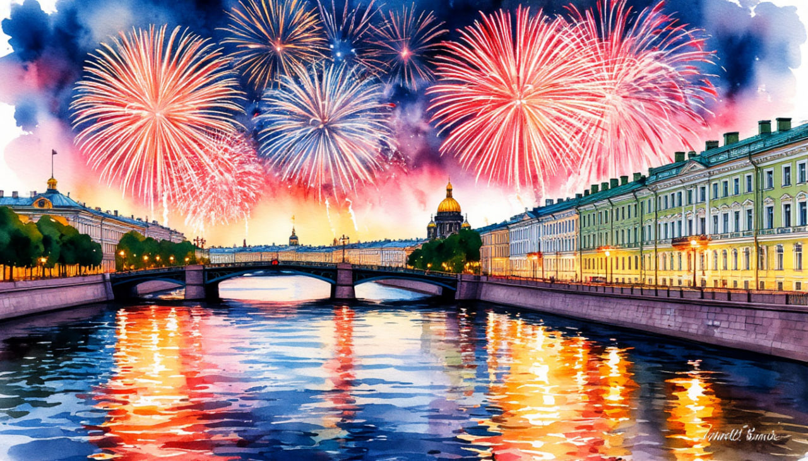

День Победы в Санкт-Петребурге

Даты тура: с 8 мая (пт) по 12 мая (вт)
Стоимость тура:
- 25 900 р. - взрослый
- 25 700 р. - пенсионеры/студенты/школьники
- 31 300 р./чел - одноместное размещение
По программе:
- - Памятник «Блокадному трамваю»
- - Памятник "Танк-победитель"
- - Мемориальный комплекс "Кировский вал"
- - Царское село с Екатерининским парком
- - Павловский парк
Программа тура:
1 день:
- 17-00- выезд из Костромы от ТРЦ "РИО"
2 день:
- Прибытие в Санкт-Петербург.
- Завтрак в кафе города.
- Наша экскурсия символично начнется от Площади Победы, Вы познакомитесь с Монументом Героическим Защитникам Ленинграда.
- Далее отправляемся по Старой петергофской дороге в Петергоф. Проедем по местам, где проходила оборона Ленинграда.
- Вы увидите памятник «Блокадному трамваю» - Здесь в сентябре 1941 года Петергофское шоссе было перекрыто трамвайными вагонами для защиты Ленинграда от фашистских танков.
- Недалеко от этого памятника находится памятник "Танк-победитель" - боевая машина, первый выпущенный танк "КВ-85", один из двух сохранившихся экземпляров данной модели, установлен в 1951 году. Далее сделаем остановку у мемориального комплекса "Кировский вал", который относится к "Зеленому поясу Славы". Именно здесь, осенью 1941 года фашисты были остановлены на пути к Ленинграду.
- Прибытие в Петергоф. Большая экскурсия в Петергоф «Там блещут серебром фонтаны…» с посещением Нижнего парка фонтанов
- Невероятные по красоте фонтаны – это то, ради чего обязательно нужно посетить Петергоф. Во время экскурсии Вы увидите главные каскады и фонтаны, узнаете об истории создания дворцово-паркового ансамбля, о системе снабжения фонтанов водой, а также множество интересных фактов об истории и современной жизни парка и
- Поздний обед в кафе.
- Возвращение в Санкт-Петербург. Размещение в отеле.
- В свободное время у Вас будет возможность принять участие в праздничных мероприятиях в городе. Программа уточняется.
3 день:
- Завтрак в отеле «шведский стол».
- Обзорная экскурсия по Санкт-Петербургу. Экскурсия начнется с посещения знаменитых мест, таких как Невский проспект, главная улица города, украшенная величественными зданиями и памятниками архитектуры. Далее путь пролегает мимо Дворцовой площади и знаменитого Зимнего дворца, резиденции русских императоров, а также вдоль живописных набережных реки Нева, откуда открывается захватывающий вид на знаменитый остров Васильевский и его стрелку. Следующие остановки включают посещение Исаакиевской площади, где находится одна из красивейших церквей города — Исаакиевский собор, а также площадь Декабристов, посвященную событиям восстания декабристов в XIX веке. Площадь Растрелли порадует вас уникальными образцами русского барокко, воплощенными талантливым итальянским архитектором Бартоломео Растрелли.
- Экскурсия по территории Петропавловской крепости «Здесь будет город заложен…" : бастионы и куртины XVIII века, самое высокое сооружение города - Собор Святых Петра и Павла, являющееся символом Санкт-Петербурга (внешний осмотр), монетный двор, здание тюрьмы Трубецкого бастиона - главной политической тюрьмы царской России.
- Обед в кафе города.
- - Экскурсия в Центральный Военно-Морской Музей Имени Императора Петра Великого - один из старейших музеев России, основанный в 1709 году по указу Петра I, входит в число крупнейших музейных учреждений в мире и является объектом морского историко-культурного наследия. В музее насчитывается около 13000 экспонатов корабельной техники, более 11000 предметов оружия. Но речь не только о боевых экземплярах. В фондах музея хранится более 62000 произведений искусства, а еще военная форма, награды, документы, рукописи, чертежи и фотографии, которых тысячи и тысячи. В музее хранится уникальный экспонат - древний челн, который датирован началом первого тысячелетия до нашей эры. После экскурсии у Вас будет возможность погулять по музею самостоятельно
- Стоимость 1100 руб./взрослые, 800 руб./дети до 17 лет, пенсионеры.
- Возвращение в отель самостоятельно.
- Ночная экскурсия «Поющие мосты Петербурга»
- В это дивное, загадочное, чуть мистическое время так необычно смотрится знакомый город, его парадный исторический центр, его удивительные подсвеченные контуры мостов. Кульминацией экскурсии является разведение мостов, когда вздымаются вверх их могучие «крылья» и начинают свой проход караваны судов, идущие своим путем по реке в море....Начало экскурсии 22:30.
- Стоимость 1 500 руб./взрослые, 1 300 руб./дети до 15 лет. Оплата при бронировании или сопровождающему группы.
За дополнительную плату (по желанию) СТРОГО ПРИ БРОНИРОВАНИИ ТУРА:
За дополнительную плату (по желанию):
4 день:
- Завтрак в отеле «шведский стол». Освобождение номеров.
- Экскурсия на прогулочном кораблике по рекам и каналам Санкт-Петербурга - «Северная Венеция».. Экскурсия проводится при группе не менее 18 человек.
- Стоимость 1 500 руб./взрослые, 1 300 руб./дети до 15 лет. Оплата при бронировании или сопровождающему группы.
- А далее отправляемся в Царское село!
- Экскурсия по Екатерининскому Парку. Екатерининский парк – красивейший памятник мирового садово-паркового искусства 18 – 20 вв. Прогуливаясь по нему, вы испытаете массу приятных эмоций и ощутите наслаждение от его живописной природы. Во время экскурсии по парку вы увидите самые яркие и интересные достопримечательности Царского села. Это Екатерининский дворец, Камеронова галерея, Эрмитаж, Эрмитажная кухня, Верхняя и Нижняя ванна, Адмиралтейство, Грот, Холодная баня (Агатовые комнаты), Гранитная терраса, Турецкая баня, Мраморный мост.
- Посещение Екатерининского дворца. Вы увидите огромный Екатерининский дворец XVIII века, который создал великий архитектор Бартоломео Растрелли. Познакомитесь с впечатляющим внутренним убранством, пройдётесь по Большому (Тронному) залу, сделаете основательную остановку в Янтарной комнате. Последняя была недавно восстановлена в полном объёме. Над реконструкцией знаменитого кабинета трудились несколько десятилетий, и теперь она выглядит ещё внушительнее, чем прежде.
- Стоимость - 1500 руб./взрослые, дети с 14 лет и студенты очных факультетов при наличии студенческого билета - 900 руб./чел., пенсионеры - 900 руб./чел., дети с 7 до 13 лет – 600 руб./чел., дети строго до 6 лет - бесплатно
- ВНИМАНИЕ Участники специальной военной операции, члены семьи участников специальной военной операции – посещают дворец БЕСПЛАТНО.
- Посещение дворца для желающих вместо свободного времени в парке.
- Экскурсия в Павловский парк - бывшую летнюю резиденцию императора Павла I. Масштаб парка вас приятно впечатлит. Вся территория парка украшена сооружениями, созданными лучшими архитекторами: Вольерный садик, Павильон Трех граций (без посещения), Памятник родителям, Мавзолей Павла I, Мост Кентавров и другие. Территория парка наполнена скульптурой. Причем, скульптура вся подлинная. Если Вам повезет, Вы сможете покормить местных белочек.
- Поздний обед в кафе города.
- 18-00 ориентировочное время выезда.
За дополнительную плату (по желанию):
За дополнительную плату (по желанию) СТРОГО ПРИ БРОНИРОВАНИИ ТУРА:
5 день:
Прибытие в Кострому в первой половине дня (ориентировочно)
В стоимость тура входит:
- - проживание в гостинице*
- * «Cosmos Saint-Petersburg Pribaltiyskaya Hotel» 4* (Номер реестровой записи:С782024022202)
- - питание: 3 завтрака + 3 обеда
- - услуги гида-экскурсовода
- - экскурсионная программа
- - автобусное обслуживание по программе тура
Дополнительно оплачиваются (по желанию):
- - Экскурсия на прогулочном кораблике «Северная Венеция». Стоимость 1 500 руб./взрослые, 1 300 руб./дети до 15 лет. Оплата при бронировании или сопровождающему
- - Ночная экскурсия по городу - Стоимость 1 500 руб./взрослые, 1 300 руб./дети до 15 лет. Оплата при бронировании или сопровождающему группы
- -Экскурсия в Центральный Военно-Морской Музей Имени Императора Петра Великого – СТРОГО ПРИ БРОНИРОВАНИИ ТУРА. Стоимость 1100 руб./взрослые, 800 руб./дети до 17 лет, пенсионеры
- - Посещение Екатерининского дворца СТРОГО ПРИ БРОНИРОВАНИИ ТУРА - Стоимость - 1500 руб./взрослые, дети с 14 лет и студенты очных факультетов при наличии студенческого билета - 900 руб./чел., пенсионеры - 900 руб./чел., дети с 7 до 13 лет – 600 руб./чел., дети строго до 6 лет - бесплатно.
- ВНИМАНИЕ Участники специальной военной операции, члены семьи участников специальной военной операции – посещают дворец БЕСПЛАТНО.
- Для бронирования необходимы данные паспорта РФ и свидетельства о рождении, если с вами путешествуют дети
- Предоплата – 50% от стоимости тура. Остаток за 30 дней до даты выезда.
- Любой тур можно оформить не выходя из дома. Подробнее: Тут
Стоимость тура не зафиксированы и могут быть изменены в большую или меньшую сторону в зависимости от уровня спроса в любой момент.
Время начала экскурсий и их порядок указано ориентировочно.
Фирма-исполнитель оставляет за собой право замены экскурсий без уменьшения общего объема экскурсионной программы.
По вопросам бронирования обращайтесь: